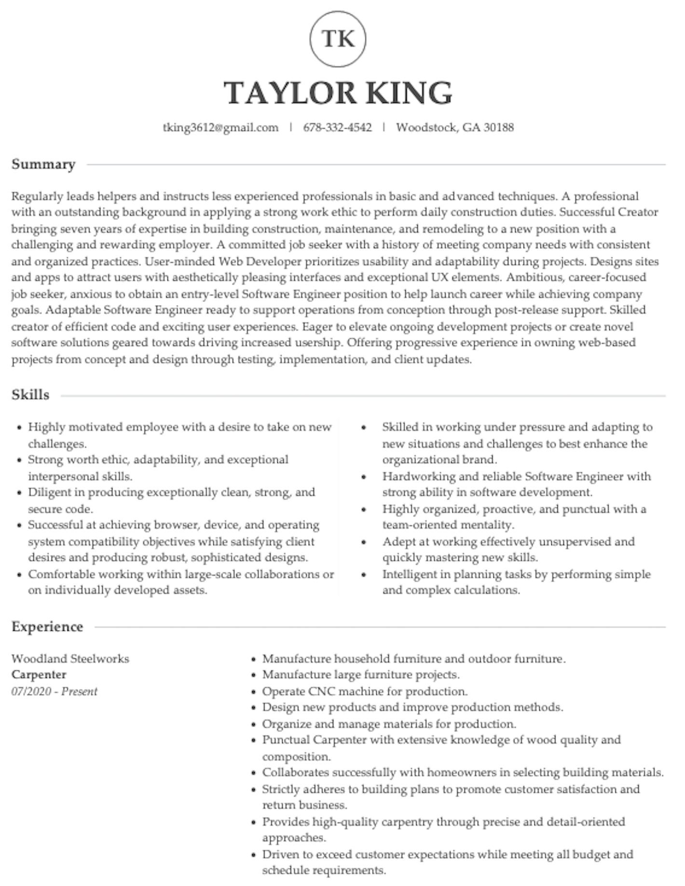

Below are links to my social media.
If you prefer a darker background that is easier on the eyes try night mode below. Just click the moon below.
Bio
I am a Carpenter based in Woodstock, Georgia. I am interested in becoming a Software Engineer.
Carpentry has always been a great passion of mine. I love brainstorming ideas, creating new designs, and executing projects with different techniques and tools.
Throughout my time researching Software Engineering, I began to see the similarities between these two fields. Although Carpentry deals with physical projects and Software Engineering deals with digital projects, in both fields, I have the opportunity to create something new that has the potential for funtionality and to be aesthetically pleasing by using many different techniques and tools.
If you are someone who is experienced in the Software Engineering industry, or new to the field, I would love to hear how you approach new projects and how to further expand on the creative process.
Shoot me an email by clicking the link below.
Resume
 Resume LinkMy Projects